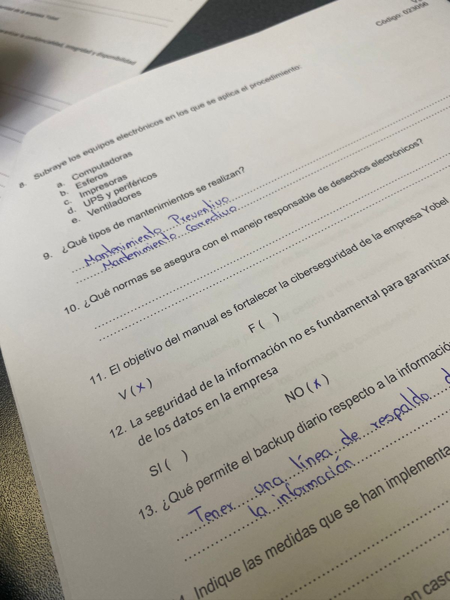
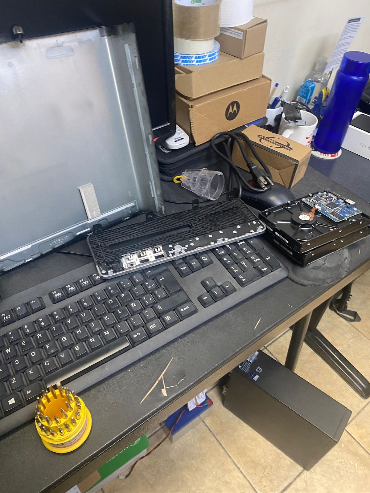

EXPERIENCIAS EN LAS PASANTÍAS
Nombre: Nahomi Navarrete
YOBEL SCM
YOBEL SCM es una empresa líder en la región latinoamericana, con más de 50 años de experiencia ofreciendo el servicio de Supply Chain Managemente para la optimización de las cadenas de suministro: planteamiento, abastecimiento, manufactura y logística, a través de sus unidades de negocio especializadas.
Mi nombre es Nahomi Navarrete, realice mis prácticas en la empresa YOBEL S.C.M, queda ubicado en el sector de Llano Grande, Av. García Moreno s/n Km 15.5, Panamericana Nte., Quito 170133, la jornada laboral era de 8:00 a 17:00, el primer día nos presentaron al todo el personal de Recursos Humanos, fueron muy amables y a la vez muy respetuosos, en la cual la jefa de Gestión Humana era Jhoanna Menendez y dio paso a la señorita pasante Dayana Poaquiza, la que muy amable nos dio información de la Empresa y nos regalo un pan con jugo ya que ibamos a trabajar con ella y la hora de salida era muy tarde.
La primera semana realizamos inventarios, al igual que realizamos inventarios para la entrega de nuevos uniformes del personal de Quito, la Stra. Dayana fue quien solicitó autorización para que podamos entrar a la bodega la cual fué autorizada cumpliendo las normas de seguridad, para entrar a la bodega era necesario entrar con punteras y cascos para asi evitar cualquier peligro, una vez ahí los trabajadores muy respetuosos empezaron a llegar para así poder retirar sus uniformes y una vez teniendo los uniformes tenían que dejar firmando una hoja donde conste que recibieron sus uniformes. Fue muy bonito ya que hicimos amig@s y fueron muy amables y respetuosos.
También estabamos con la Srta. Maria Llerena Asistente de Gestión Humana la cual nos dió unas carpetas del personal de Quito y Machachi para realizar un Check List de la información que contiene y tambien revisar sobre el personal que ya no trabaja en la empresa, una vez realizado eso se ordeno alfabéticamente y se colocó en los archivadores, tambien el el transcurso de las 10 a 10:30.
Llegaron carpetas del personal de Guayaquil, la Srta. Maria nos dio las indicaciones para poder ordenar las carpetas con un Check List ya que estas se encontraban en desorden, y teniamos que poner la información de acuerdo a lo solicitado ya que Recursos Humanos necesitaban inormación de aquellas personas y estas hojas también debían ser escaneadas ya que tenian que tener los documentos en físico y digital.
Luego la Sra. Gabriela Tenorio Asistente de Gestión Humana solicitó una computadora al área de Sistemas, la cual fue otorgada, y en Excel hicimos un formato para las cargas familiares de cada uno de los trabajadores de Quito, Guayaquil y Machachi, se fue buscando en cada una de las carpetas para ver si constaba o no con alguna carga familiar lo cual fue realizado de la mejor manera.
Fue muy bonito haber trabajado en el área de Recursos Humanos ya que las chicas fueron muy amables y muy atentas con nosotros, estaban muy al peniente de nosotras, y también fuimos felicitadas por la Jefa Sra. Jhoanna Menendez por haber realizado correctamente las actividades asignadas al igual que fuimos felicitadas por las demás chicas del área.
Pasamos al área de Contabilidad con el Mgtr. Administración Tributaria Fausto Chavez, es una persona muy seria en su trabajo, con el cual realizamos roles de pago de los transportistas de todas las provincias incluyendo gastos internos dentro de la empresa. Fue muy interesante estar en el área ya que aprendimos muchas cosas interesantes
El Sr. Fausto Chavez fue muy amable y nos regalo unos helados, snacks, galletas.
Pasamos al área de Sistemas con el Coordinador de TI. Sr. Fernando Pallo el cual nos dió información de lo que se realizaba en el área, la Srta. Betty Auxiliar de TI dió a conocer algunas normas de seguridad de la empresa, nos explicó sobre algunas aplicaciones con las que se trabaja en la empresa, seguido de eso nos dió una pequeña prueba para ver si hemos entendido algo sobre lo que nos explicó

Al día siguiente realizamos una práctica en la cuál revisamos las partes de un CPU, también hicimos mantenimiento a algunas computadoras como formatear un Disco, al igual que realizamos un proceso para instalar el Sistema Operativo y sus debidas aplcaciones.

Fué una experiencia única ya que aprendimos algúnas cosas que no teníamos conocimiento, estamos muy agradecidas con Yobel ya que nos abrió las puertas para realizar nuestras pasantías.